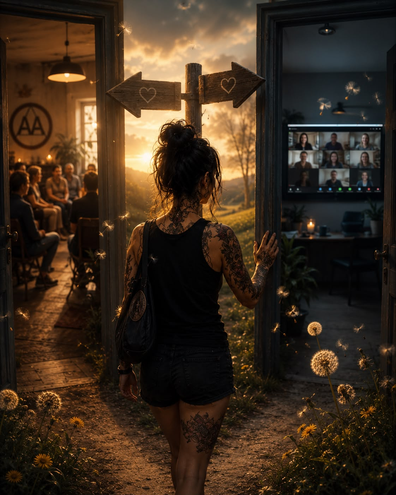

Jeg har alltid likt å være forberedt.
Kanskje det er en eller annen forsvarsmekanisme fra da jeg var liten.
Å vite hva som ventet meg.
Da jeg gikk gravid for tjue år siden leste jeg alt.
Svangerskapet uke for uke. Jeg fulgte med på alt som skjedde der inne, fra embryo til foster.
Alt.
Jeg glemte bare å lese om det som skjedde etterpå.
Så da dagen kom, og dette lille mennesket så dagens lys, ble jeg helt satt ut.
Det lille mennesket hadde ikke valgt å komme til verden.
Hun var forsvarsløs og bitteliten, og jeg hadde ingen anelse om hvordan jeg skulle være mamma.
Jeg visste bare at jeg skulle gjøre alt i min makt for at hennes liv skulle få helt andre forutsetninger enn det jeg hadde da jeg kom til.
Jeg var like nyfødt som henne.
Det er så mange ting i livet jeg aldri har kunnet forberede meg på.
Enda så mye jeg bekymret meg og overtenkte.
Min første skoledag.
Mitt første kyss.
Min første jobb.
Da jeg holdt tale i bryllupet til broren min.
Da jeg fikk lappen.
Da jeg ble mamma.
Første gang jeg reiste alene på ferie.
Da jeg kjøpte min første leilighet.
Mitt første lån.
Et ekteskap.
En skilsmisse.
Sykdom.
Det ble aldri sånn jeg hadde tenkt.
Noe ble mye bedre.
Noe ble verre.
Og noe ble det aldri noe av.
Som første gang jeg gikk på et AA-møte.
Etter en sydentur med en venninnegjeng i tjueårene husket jeg nesten ikke ferien. Jeg satt i et klamt fly, var utslitt, kvalm og flau over grenseløsheten min, dramaet og alle de unødvendige bekymringene jeg hadde påført venninnene mine.
Da innså jeg at noe måtte endres.
Jeg kunne ikke fortsette å gå på grisefylla hver eneste helg, ha blackouts og bruke hver ferie på å komme hjem mer sliten enn da jeg dro.
Jeg var helt ny.
Og helt sinnsykt nervøs.
Og ikke faen om jeg skulle si:
«Hei, jeg heter Alise, og jeg er alkoholiker.»
Så jeg sa:
«Hei, jeg heter Alise, og jeg tror jeg har et veldig komplisert og ambivalent forhold til alkohol.»
Så ble det stille.
Hva mer skulle jeg si?
Jeg så ned på skoene mine.
Kjente rødmen krype oppover halsen.
Kjente harehjertet hamre.
Jeg ville reise meg og gå.
Jeg var da ikke som de som satt her.
Så brøt én stillheten.
Og fortalte sin historie.
Så en til.
Så en til.
Sånn fortsatte det.
Den siste som tok ordet sa at han alltid ble glad når det kom en nykommer.
Fordi det minnet ham på hvordan det hadde vært.
Hans egen historie.
Maktesløsheten.
At min tilstedeværelse ikke bare hjalp meg.
Den hjalp også ham.
«I alle dager,» tenkte jeg.
«Hva snakker du om?»
Det tok meg mange år og mange møter å forstå hva han mente.
Hvor viktig nykommeren er.
Hvor viktig du som kommer på ditt aller første møte er.
Enten det er i TryggSirkel, på AA eller et helt annet sted.
Det motet du viser den dagen, betyr så mye mer for de andre enn du kan forestille deg.
Men det skal jeg skrive om en annen dag.
Det jeg prøver å si, er at uansett hvor forberedt jeg har vært på ting i livet, har det egentlig ikke hjulpet.
For livet blir aldri slik jeg hadde tenkt.
Men jeg har lært at veien blir til mens jeg går.
Som mamma.
I en jobb.
I et ekteskap.
Som sjåfør.
Og i et edru liv.
Det er ikke noe jeg tar lett på. Og jeg kan ikke forberede meg på alle mulige utfall.
Det er et ansvar.
Og det er en jobb.
En jobb med å gjøre så godt en kan i foreldrerollen, bak rattet, på jobb, i et forhold og i sin egen edring.
Hver eneste dag er det mitt ansvar å fortsette å utvikle meg og ta veien slik den kommer.
Det er ikke lett å holde seg edru.
Det er noe av det vanskeligste jeg har gjort.
Jeg har tusen unnskyldninger til å gi opp.
Tenke at det hadde vært så mye lettere.
Selvsagt hadde det vært lettere.
Å skylde på barndommen.
På omstendighetene.
Å bagatellisere og romantisere et liv i aktiv rus.
Å bedøve mitt eget nervesystem og min egen hjerne.
Jeg tenker ofte på leserne mine som fortsatt er i aktiv rus.
Hva er det som gjør at de leser om edring?
Om alkohol?
Om mennesker som prøver å bygge seg et nytt liv?
Kanskje forbereder de seg.
Kanskje forbereder de seg på å ta det første steget.
Kanskje tenker de på å logge seg inn på sitt første møte.
Eller gå inn døra på et AA-møte.
Eller kanskje de, slik som jeg gjorde,
venter på at noe skal skje.
At det plutselig skal føles riktig.
At de en dag skal våkne og være helt klare.
Jeg tror ikke den dagen nødvendigvis kommer.
Jeg tror det begynner med en beslutning.
En personlig beslutning om å være villig til å begynne på jobben.
For det er det edring egentlig er.
En jobb.
Ikke én stor beslutning som ordner alt.
Men tusen små valg.
Å stå opp den dagen du helst vil bli liggende.
Å gå på et møte selv om du har lyst til å snu i døra.
Å be om hjelp.
Å si nei.
Å kjenne på uro uten å bedøve den.
Å reise seg igjen når livet gjør vondt.
Å møte seg selv med ansvar og kjærlighet.
Ikke med unnskyldninger og bortforklaringer.
Det er en jobb.
Og den koster.
Men det betyr ikke at den ikke er verdt det.
Jeg tror vi gjør oss selv en bjørnetjeneste hvis vi later som noe annet.
For mange av oss har brukt år på å bygge et liv rundt alkoholen.
Da er det heller ikke rart at det tar tid å bygge et liv uten.
Jeg tror ikke på raske løsninger lenger.
Jeg tror på arbeid.
På ærlighet.
På mennesker som tør å si:
«Dette er vanskelig.»
For det er vanskelig.
Men hver dag jeg velger edringen,
velger jeg også noe annet.
Jeg velger å være til stede.
Jeg velger å være mamma.
Jeg velger å være meg.
Jeg velger sårbarheten.
Jeg velger møtene.
Jeg velger å ta de 90 sekundene.
Jeg velger jobben med å skape et bedre liv for meg selv.
Hver eneste dag.
Og den jobben startet den dagen jeg turte å møte opp.
Turte å være nykommeren.
Turte å ta dagen i dag edru.
Slik de som gikk før meg gjorde.
